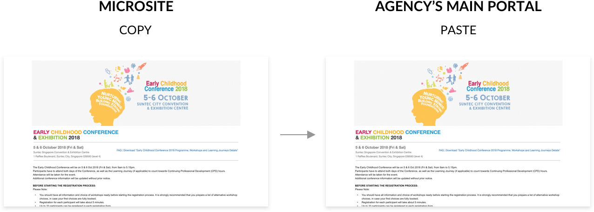
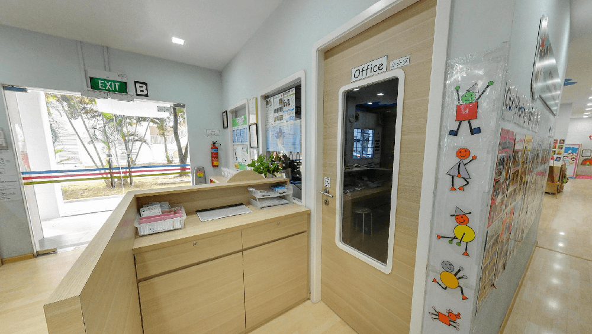
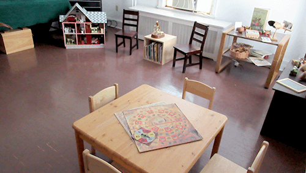
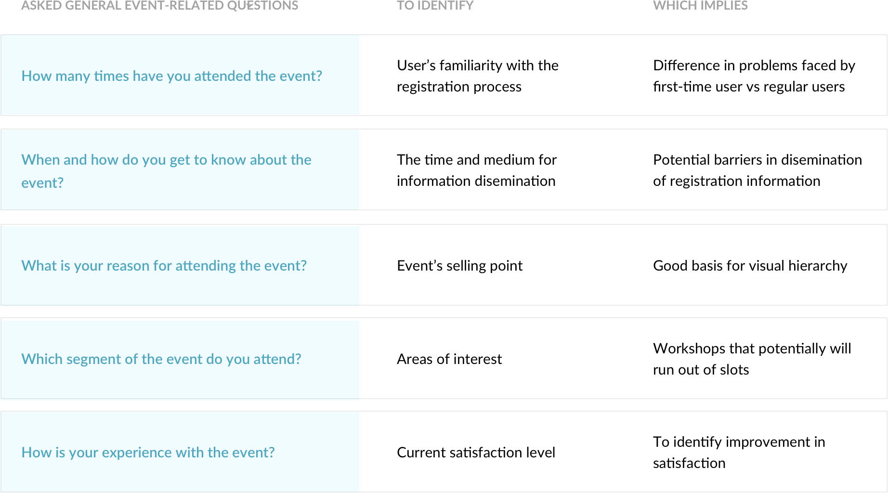
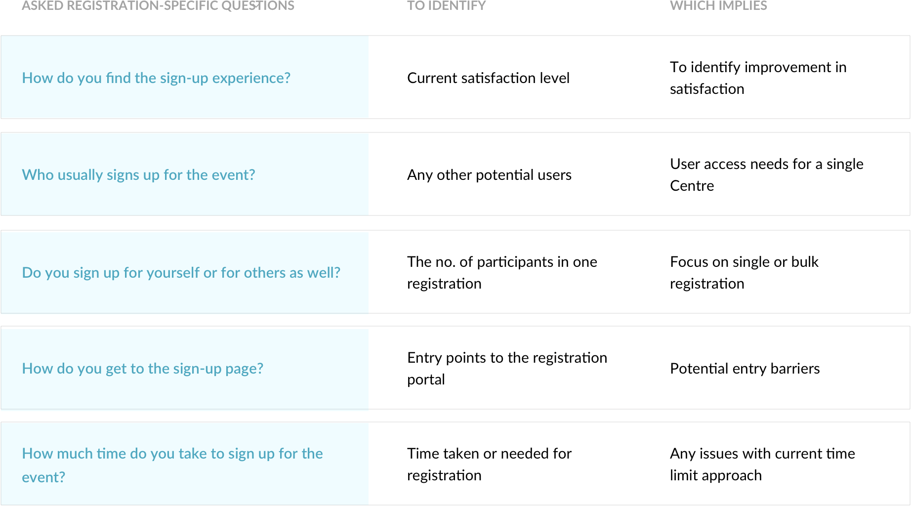
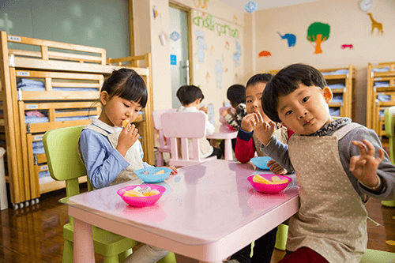
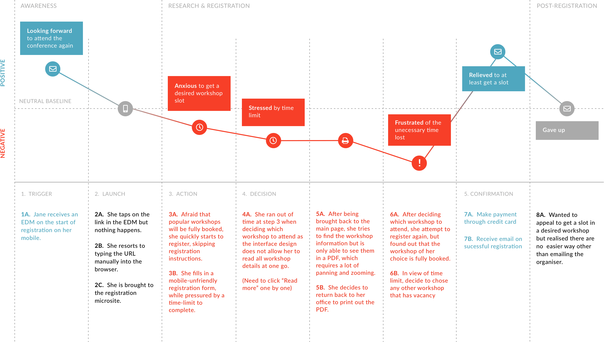
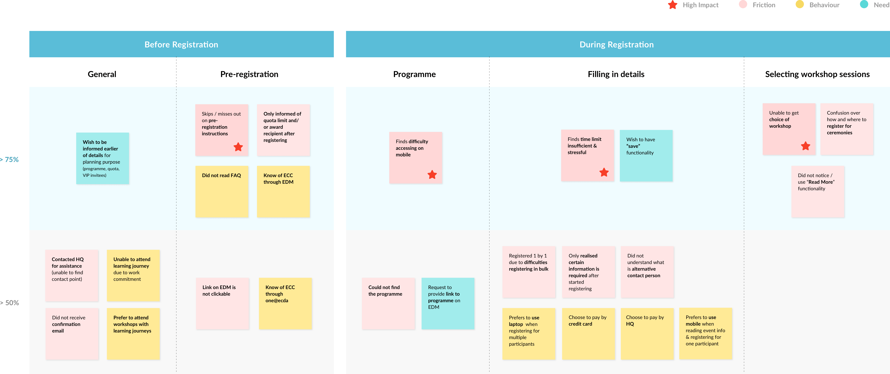
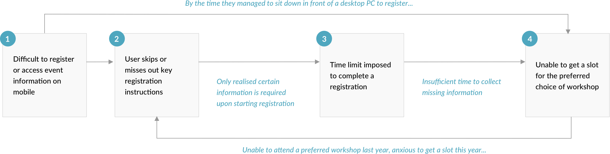

The Early Childhood Conference is an annual event highly anticipated by Early Childhood Educators in Singapore. But year after year, they faced a barrier to participate. How can we help to ease the registration process for a conference with limited slots?
ROLEInteraction Design
Research
Prototyping
PRODUCTEvent Registration Portal
YEAR2019
First Step to an Event Journey
The beginning of every event starts from registration. From a study made by Aventri, managing attendee registration is one of the top pre-event pain points. A smooth and efficient registration process is the key to a positive first impression.
#1 - Understanding Business Goals
Need for Business Buy-ins
Why This Project Has to Happen
Originally a standalone microsite, the registration portal for this year's conference was decided to be integrated with the Agency's main transactional system as part of the effort to create a single universal platform for all interactions and services with Preschool Operators.
Business Intention
We identified many potential areas for improvement from an initial assessment of the current microsite. However, we sensed resistance in making improvements to the registration process from our engagement with the Business Team. The following is the core of their intention.

The Team is concern about opening registration on time and therefore wish to directly duplicate microsite directly to the new portal. Keeping in mind the limited time frame, we planned and proposed a quick research stint.
#2 - Discovering User Needs & Problems
Exploring User's Environment
Together with the Business Team, we went down to various Preschools to interview Centre Principals whom we have identified as potential end users. Beside registering for themselves, Principals might also register for their staff (Teachers).

Conducted interviews with Principals in their offices

Some interviews are conducted in children's activity room as their office spaces are small
The Principals shared their experience with the event, from awareness, to registration, to attending the event. We wanted to focus on finding out their motivation, behaviour and satisfaction throughout the entire event journey. Below are some key general event-related questions asked.


On-Site Usability Testing with Microsite
We also conducted usability testing on last year's registration microsite with a invision prototype (as the site is no longer active). This helps to trigger users' memory on their registration experience and also act as a good basis for discovering pain points.
Prototype of last year's registration microsite created from invision -
View prototype
Rowdy Working Environment

Users' working environment is often not ideal for "ticket battles".
Testing on-site provided some crucial environmental context. Centre Principals are usually either on-the-go or based in their respective Preschools. Office spaces are usually in close proximity to children's activity areas. This can potentially further increase their stress level when registering for the conference.
This further emphasize on the importance for a smooth and efficient registration process!
#3 - Synthesizing our findings
Identifying the Key Issue & Focus
Where are the Frictions?
By mapping out the registration journey, we helped Business to better visualise the potential areas that need improvements. The red negative touchpoints reflect the frictions encountered by the Centre Principals when registering for the conference.

A typical Principal who registers for herself
What are the Priorities?
We grouped our key findings (frictions, behaviour, needs) into 3 phases: Pre-registration, Registration and Post-registration. This help us to draw our focus on areas where most users face difficulties with.

Affinity map for synthesis & prioritisation
The Correlation
Through our analysis, we identified 4 correlated key factors that impact the registration experience.
- Difficult to register or access event information on mobile
- Skip or miss out key registration instructions
- Insufficient time limit imposed to complete a registration
- Unable to get a slot for the preferred choice of workshop

The vicious cycle resulting from the correlated factors
So the main question is...
How can we eliminate stress and minimise uncertainty in securing a seat for a desired workshop?
We wanted to focus on designing a friction-free registration experience, to minimise any uncertainty (in getting a seat for a desired workshop) that results from process or system flaws.